卍新纂大日本續藏經 第63冊
No.1249 叢林校定清規總要 (2卷)
【宋 惟勉編次】
第 1 卷
No. 1249-A
藂林規範。百丈大智禪師已詳。但時代寢遠。後人有從簡便。遂至循習。雖諸方或有不同。然亦未嘗違其大節也。余處眾時。往往見朋輩抄錄藂林日用清規。互有虧闕。後因暇日。悉假諸本。參其異。存其同。而會焉。親手繕寫。頗為詳備。目曰藂林校定清規總要。厘為上下卷。庶便觀覽。吾氏之有清規。猶儒家之有禮經。禮者從宜。因時損益。此書之所以繼大智而作也。是皆前輩宿德。先後共相講究紀錄。愚不敢私以所聞所見。而增減之如前。所謂參其異。存其同。而會焉爾耳。觀者。幸勿病諸。咸淳十年甲戌歲。結制前二日。后湖比丘 (惟勉) 書于寄玩軒。
叢林校定清規總要目錄
叢林校定清規總要目錄(終)
No. 1249
叢林校定清規總要卷上
一 告香依戒出班燒香之圖
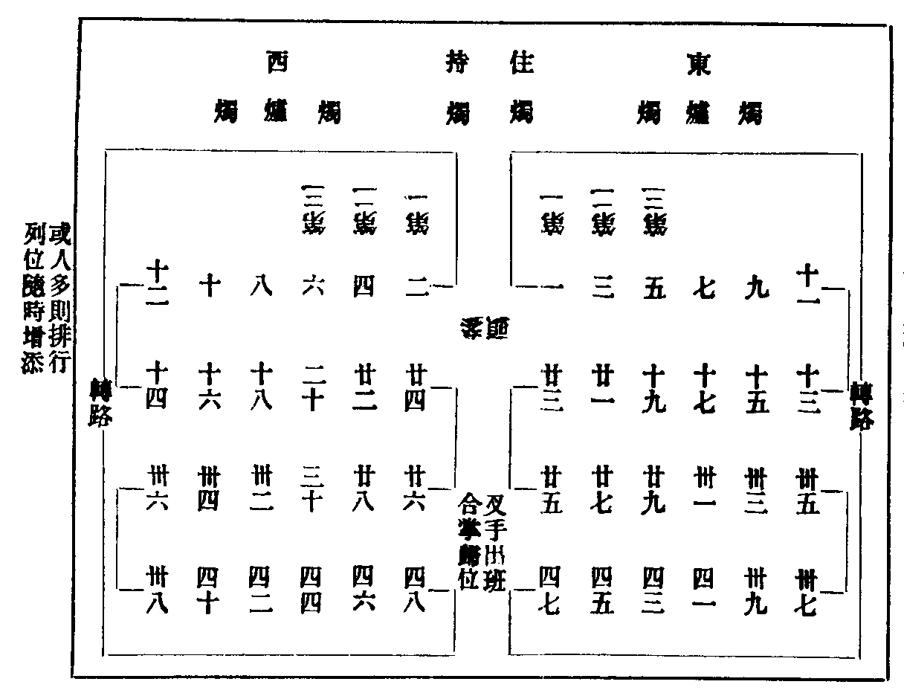
二 告香普說立班之圖
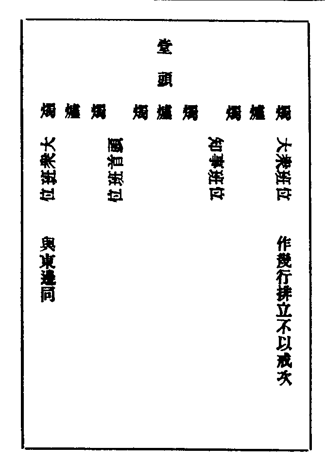
三 四節住持特為首座大眾僧堂茶圖
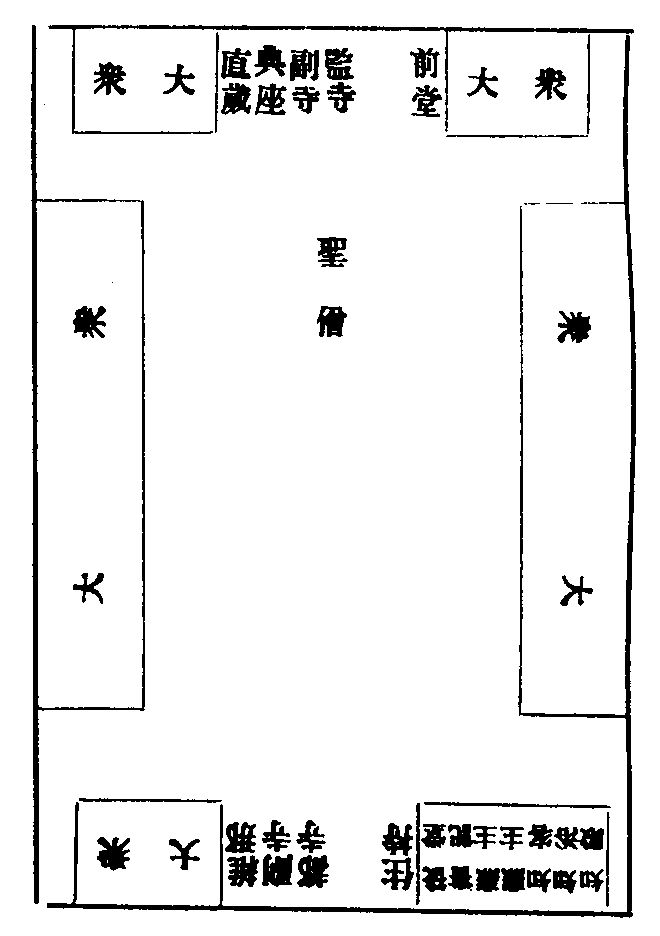
四 四節知事特為首座大眾僧堂茶湯之圖
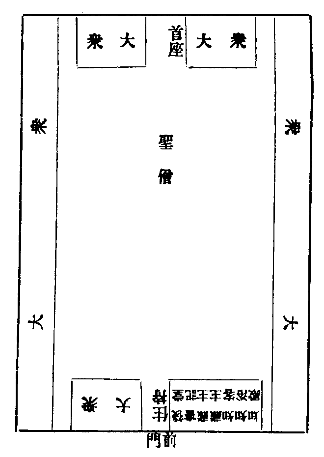
五 四節前堂特為後堂大眾僧堂茶圖
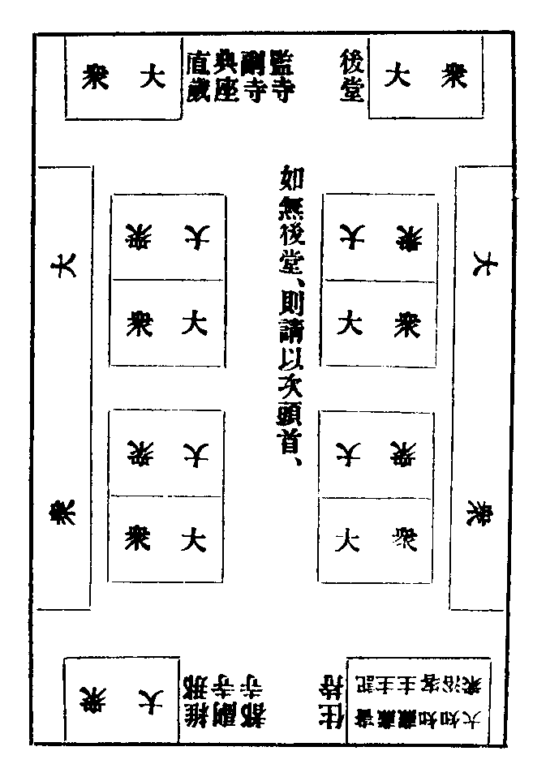
六 僧堂鉢位十六板首之圖
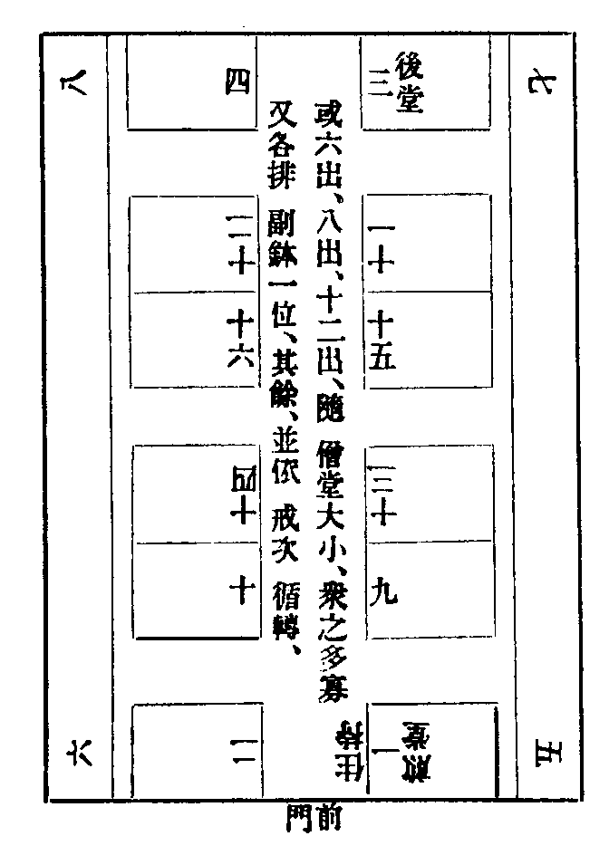
七 諸山法眷特為住持煎點寢堂廟坐之圖
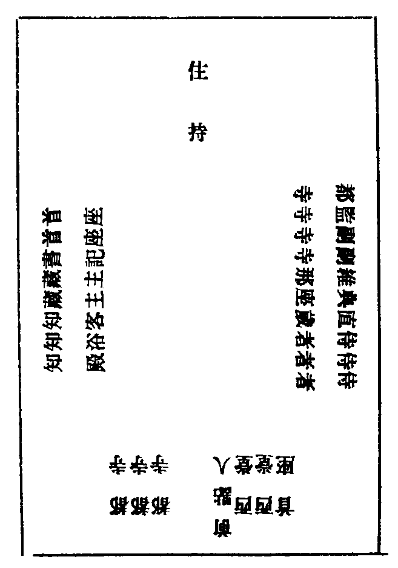
八 諸山特為住持煎點寢堂分手坐位之圖
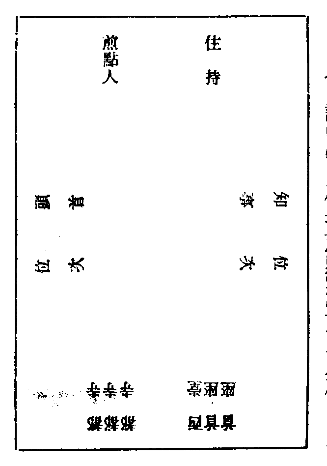
九 特為新舊兩班茶湯管待之圖
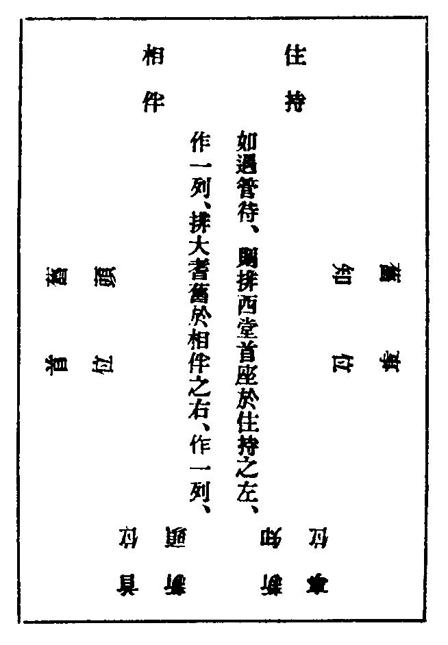
十 夏前住持特為新挂搭茶六出之圖
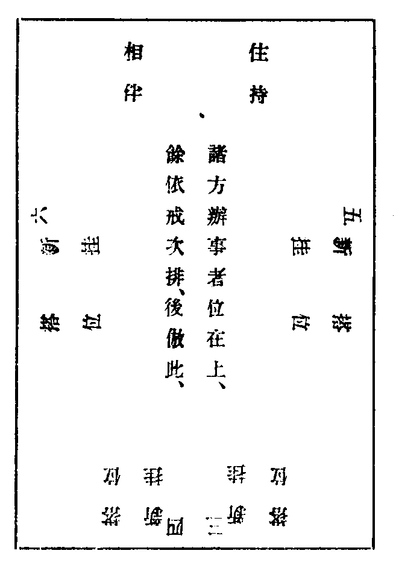
十一 夏前知事頭首特為新挂搭茶八出之圖
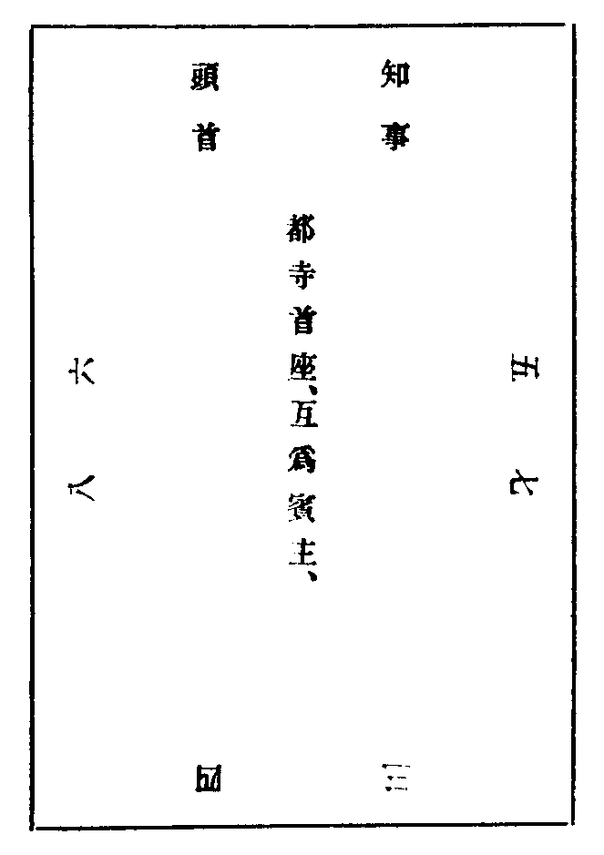
十二 新住持入院知事交寺記狀式(無可漏)
當寺庫司比丘某等。 寺印一顆。 右謹申納 新命堂頭大和尚。伏候 慈旨。
某年某月 日。當寺庫司比丘 某 等狀。
十三 知事請新住持齋狀式
當寺庫司比丘某等。 右某啟。取今晨午刻。就雲堂特備蔬飯祇 迎。伏望 尊慈。俯賜 降重。謹狀。
某年某月 日。當寺庫司比丘 某 等狀。
端狀拜請 新命堂頭大和尚禪師。具位某等謹封。
十四 知事請新住持特為茶湯狀式
當寺知事比丘某等。 右某啟。取今晨齋退。就雲堂特為點茶。用伸陳 賀之儀。伏望 尊慈。俯賜 降重。謹狀 年 月 日。具位某等狀(可漏。與齋狀同式)。
十五 住持請新首座特為茶牓式
堂頭和尚。今晨齋退。就 雲堂點茶。特為 新命首座。聊旌陳 賀之儀。仍請 諸知事大眾。同垂 光伴 今月 日。侍司某敬白(請客侍者名)。
十六 四節住持免人事牓式(前是古式。後是今式)
(結制。解制。冬節。歲節)禮數。併就來日。法堂人事。 頭首知事。耆舊法眷。私下往復。不必講。切希悉及。 住山某咨白。
(結制。解制。至節。歲節)並就來日。法堂上人事。例免到方丈。伏幸 眾慈。 住山某啟白。
十七 四節茶湯牓狀式(方丈庫司。用牓七行。首座。用狀九行)
堂頭和尚(今晨齋退。今晚)就 雲堂點(茶湯)一中。特為 首座(空一字)大眾。聊旌 (結制。解制。至節。歲節)之儀。仍請 諸知事。同垂 光伴 今月 日。侍司某敬白(請客侍者名)。
庫司(今晨齋退。今晚)就 雲堂(點茶煎湯)一中。特為 首座(略空)大眾。聊旌 (結制。解制。至節。歲節)之儀。伏望 眾慈。同垂 光降 今月 日。庫司比丘某等敬白。
前堂首座比丘某。 右某。今晨齋退。就 雲堂點茶一中。特為 首座大眾。(無後堂。則書記藏主) 聊旌(結制。解制。至節。歲節)之儀。仍請 諸知事。伏望 眾慈。同垂 降重。謹狀。
今月 日。前堂首座比丘 某 狀。
可漏 狀請 首座暨大眾。 前堂首座比丘某。謹封(如有後堂。當用前堂二字)可漏。粘於狀頭。貼僧堂前下間版上。
十八 夏前請新挂搭特為茶單式
方丈 前寫新挂搭三字。各具雙字名稱呼。依戒次排列寫。末後書。堂頭和尚。今晨齋退。就法堂點茶特為。伏希 雲集 今月 日。侍司某拜請(請客侍者名)各人於名下。書某拜命。
庫司 亦寫新挂搭三字。各具單字名稱呼。逐一排行寫。末後書。右某等。今晨齋退。就某處點茶特為。伏望 眾慈。同垂 降重 各人。於名下。書某知。
今月 日。庫司比丘 某等 拜請。
頭首 竝依庫司式。但書首座比丘某等拜請。 眾頭首列諱名與首座名齊寫。
十九 報兄弟謝挂搭牓式
新歸堂兄弟。來晨粥罷。詣方丈。謝挂搭。
今月 日。侍司某。敬白(侍者寫了。令堂司行者。貼眾寮前板上)。
二十 住持知事頭首回禮新挂搭牓式
堂頭和尚。來晨粥罷。回禮新歸堂首座。
今月 日。行者某承準(貼眾寮前上間板上)。
新歸堂首座。來晨粥罷。知事頭首回禮。伏希 尊悉。
今月 日。堂司行者某覆(貼眾寮前下間板上)。
二十一 眾寮解結特為湯狀式
守寮比丘某。 右某啟。取今晚。就寮煎湯一中。特為 闔寮尊眾。聊表 (結制解制)之儀。伏望 眾慈。同垂 光降。謹狀 某年某月 日。守寮比丘 某 狀可漏 狀請 闔寮尊眾 守寮比丘 某 謹封。
二十二 頭首點眾寮江湖茶請目式
其寮舍湫隘。不敢屈 尊。齋退。就 上寮。點茶一中。伏望 尊慈。特賜 降重為幸。 某 拜手。
本山辦事禪師 江湖道舊禪師。
諸位鄉尊禪師 闔寮尊眾禪師。
二十三 諸山尊宿相見請升座狀式
具位某。 右某。輙以來日。拜請 某人。舉揚宗旨 開發後學。伏望 慈悲。俯賜 攝受。謹狀。
某年某月 日。具位 某 狀。
二十四 聖節給暫到牓式
一僧某。已於本寺啟建
聖節訖。憑此為照。 某年某月 日。某寺知客某。押給。
二十五 專使請住持住持受請
如請住持。本寺庫司。會知事頭首單寮耆舊獻茶。言定何日。先遣行者老郎通書。書紙係庫司。客頭送往頭首寮。仍商議。請行人充專使。有兩班中一人。或後堂。或書記。或單寮大耆舊一人。或都寺自充。庫司請茶湯。管待。都寺同專使。前往。幹事掌財。具帳曆。塗中有事。即與專使商量。
如專使。到彼寺。若請當代。合先見知客。次見庫司。送安下訖。備門狀。先見頭首。次見單寮。(無門狀)人事畢。方安排疏帖於寢堂上。請住持人出相看。燒香大展禮拜。咨稟。呈疏帖。次知客。引往諸寮。及行堂人事。(有處。先入方丈。通報。草相看。咨稟大略然後諸處人事。次日。陳設安排。請知事頭首耆舊。於寢堂上。看疏帖。堂司集眾。申賀)如請彼寺西堂頭首耆舊人。專使入門。先見知客。引上方丈人事。方丈送安下。次往庫司諸寮。行堂人事畢。同侍者。再詣方丈咨稟。某寺今請某人。却往彼寮中咨稟。然後人事。燒香大展三拜。呈疏帖。
次日請當寺住持。同兩班勸請。至第三次受訖。看何日受請。專使須隔宿。稟當寺住持。燒香問訊云。(拜請和尚。來日為新命和尚。引座)至日。於法堂上。安排疏帖。鳴鼓集眾。專使同侍者。請住持出。升座說法。新長老只是專使自請。(松源為掩室引座。不問話。笑掩為松源引座。亦不問話。石橋為機老引座問話。息菴為復菴引座。亦問話。師門多有不同)如新出世人。是法嗣。當寺住持下座。當付法衣。(專使亦當製衣一頂。準備新人)新長老。拈衣。有法語。披衣竟。就法座下。請主人敷坐。大展九拜。謝得法。然後拈疏帖。如非法子。但於住持下座。便即拈衣。(如未拈衣。便拈疏帖。各有法語)專使接。度與維那等人。宣讀了。指法座。(有法語)升座。先拈香祝 聖。次官僚(有便拈嗣法香。或入院。方拈出)次索話。問答。提綱。敘謝。結座。(若是法嗣。下座。於住持前觸禮三拜。謝證明。非法嗣。下座。便行人事)先與住持人事。(謝詞云。一生取辦。仰愧先賢。三請既勤。難違慈命。下情無任惶懼之至。賀詞云。囊錐已露。花雨難逃。幸是當任。伏惟歡慶)次與知事頭首大眾人事。(謝詞云。叨膺請命。有玷宗風。仰荷吹噓。不任感激。賀詞云。喜受人天之請。榮添佛祖之光。下情無任喜躍之至)方丈同兩班。送安下。知客侍者。引巡寮。(如本寺蒙堂前資人。受帖時。便送安下。或免。或不免。隨意。若現職及單寮。於公界。禮當送。受與不受。無拘。有處。受請了。下人事畢便送)專使。至齋時。設受請齋。安排僧堂內。
新長老。與住持對面坐。(如請當代不用排座)專使。躬詣。炷香拜請。如常式。其餘寮舍。係當寺客頭。同專使行者。往諸寮請。挂牌。
至齋時。專使。於僧堂前門首。伺候住持。與新長老入室。揖坐。先問訊住持。次新長老前問訊。從聖僧厨後。轉中央。燒香。次上間下間。至堂外。先下間。次上間。安香合了。再問訊住持與新人。次堂內外。上下間。問訊。入堂中央問訊。出堂外。喫飯。
齋畢。就座喫茶。專使入堂聖僧前燒香。堂內外。如前燒香了。先於住持前問訊。次新人前問訊。次歸中間問訊立。行茶徧。湯缾出。先收住持與新人盞。專使直往新人前。兩展三拜訖。送新人。後門出。次往住持前。兩展三拜。送住持。前門出。至門外下手。問訊。
却再入堂。燒香一炷。大展三拜。巡堂一帀。至外堂訖。却入堂中間問訊。收大眾盞。鳴鼓三下。退座。(若請當代。即於住持前。行禮。始末同)次專使。當詣庫司。謝辦齋。亦合詣方丈。及新人處。謝云。(適間不合瀆尊。伏蒙〔降〕)新人當預與專使。議方丈引座齎嚫。及宣疏帖人。耆舊兩班。道舊鄉人。貼嚫。使其中禮。不可太過買譽虗費常住。齋罷。新人當一一巡寮問訊。是晚。專使。
請新人及主人。昏鐘湯果。却請知事頭首。相伴。新受請新人事辦。山門當特為湯果。 兩班大耆舊相伴。次早請茶。別置食。管待新人。係請客侍者請。專使係請客頭請。有貼嚫。仍請知事頭首耆舊相伴。專使行僕。高低待之。
若首座出世。臨行則有辭眾上堂。先令自侍者。或專使。預於方丈。借法座。不鋪法被。升座了。下座。先辭主人。次辭兩班。及大眾。庫司於三門設席。備茶湯。住持人居東。首座分手。新命人居南。特為。併請大耆舊相伴。都寺行禮。鳴大鐘相送。以表山門盛禮。
若西堂耆舊受帖。臨行禮儀。或講或免。在主人斟酌。臨起轎。亦鳴大鐘相送。
若當代住持。至起離日。辭眾上堂。於法座下。與大眾。普同相辭。當於三門首。安排茶湯。南面安座。首座居主位。請西堂或大耆舊。分手相伴。兩班分東西。相望而坐。首座行禮。揖坐了。燒香一炷。住持人前問訊。歸位點湯。起身再燒香一炷。進住持前問訊。退身燒相伴香一炷。中間問訊。歸位點茶。收盞。便送上轎。兩班或送或免。在主人意。
或有參隨。預當歸寺。送寮舍。可批與堂司先送之。或隨主人入院。當隨主人巡堂。
二十六 新住持入院
凡新住持入院。看何處歇泊。或兩班。或同西堂大耆舊。往安下處問訊(山門或辦轎)如側近寺外。則當大眾齊往問訊。知事當預計會。新參隨侍者令知。或新住持省事。或預有批帖。免出。則兩班大耆舊。亦當問訊。
知事取覆何時辰入院。當晚侍者。令行者一一安排來早次序。不致臨時顛倒。堂司令行者隔宿挂牌報眾。至期動法器。大眾出三門外。由遠至近排立。到門首迎接。
住持至門首。指三門。(有法語)次佛殿。燒香禮拜。(有法語)次歸僧堂挂搭。(據清規載。新住持。入三門不解包。指三門。有法語。次歸旦過。濯足。先歸僧堂挂搭。方入佛殿。燒香。間有行古法之人。亦在住持之意)挂搭之法。斂僧堂前鐘。大眾先歸鉢位立定。住持人。聖僧前燒香。同參隨。大展三拜。維那當面問訊。請住持人。歸鉢位。觸禮三拜。住持答一拜。(惟少林住淨慈靈隱。並要兩班齊送歸鉢位。觸禮三拜)次維那。引巡堂一帀。向聖僧前。並立問訊而出。參隨隨後出。(據清規載。新住持。先入堂燒香。參聖僧。同參隨。大展三拜。同巡堂一匝。維那請就鉢位。觸禮三拜。挂搭)次詣土地堂。祖師塔。燒香。(法語有無在住持意)然後入方丈。燒香一炷。據座。侍者問訊了。主人有法語。畢。行者入卓。都寺進前問訊。呈寺印。當預安排卓子筆硯。及寺印。仍備狀子。展於卓上。住持看封頭。都寺開封呈過。住持就狀。先押字。次書日子。行者使印於日子處。狀係都寺収。印子隨即封押。歸衣鉢閤。付與衣鉢侍者。或親隨行者。行者退卓。住持起身。知事全班。進前立定。都寺燒香。退身同問訊。兩展三拜。賀云。(伏承和尚光據法筵。下情無任喜躍之至)住持謝云。(自慚非器。叨據名藍。下情無任皇恐之至)知事退身。頭首大耆舊。進前草賀。客頭行者喝云。(請西堂知事頭首大耆舊。寢堂献湯)湯罷。諸山外客相見。茶湯罷。少歇。都寺具狀請齋。懷香。詣方丈。稟覆。庫司行者。安排箱袱托狀子。都寺燒香。取狀呈。如常法。次令行者。請諸山及西堂知事頭首大耆舊專使點心。更少歇。燒香侍者。覆住持。齋前上堂。仍令行者。覆知事頭首單寮諸寮挂牌。令行者預安排香卓香爐於法座前東畔準備。專使燒香行禮。住持熏疏帖。仍和會禪客問話。都寺預請維那首座。宣疏帖等人。(先讀敕黃。省剳。或府帖。山門疏。諸山疏。次第宣讀。有處。都寺首座。不宣讀。只分下手人宣。亦有嚫錢一分)齋前。行者先覆侍者。鳴鼓。次覆住持。侍者須問。疏帖安排法座前。請維那宣讀等事。周備否。祝香幾片。須隔日安排。臨時又當問過。惟法嗣香一片。住持自懷中。臨時拈出。
侍者祇候住持出寢堂坐。侍者當面問訊了。轉東邊立。方丈行者。當面問訊了。轉西邊立。侍者却下法堂東北角側立。二鼓眾集。專使同侍者入。請住持出。且於法座左邊。面南而立。(如初出世人。在別處受請已。拈衣。有法語。此處更不重疊。如未拈出。當先拈衣。有法語。然後披衣)專使燒香。度敕黃。或省劄。及帖。次疏。住持拈罷。專使一一親接。遞與行者。度與宣讀人。仍預令行者兩人。扛疏帖。先計會侍者覆過。拈疏帖。有幾番法語。或逐一有法語。則次第度之。退歸位。俟宣讀畢。再燒香。兩展三拜。住持或免。或觸禮。或問訊。
或開堂祝 聖。則官員自度疏。然後指法座。(有法語)登座。先拈香祝 聖。次官僚。次明法嗣。就座。(侍者逐一度香。須用香合盛接。逐一插向爐中)如係開堂。諸山一人。或上首一人。就法座前右邊。白槌云。(法筵龍象眾。當觀第一義)住持方垂語。禪客問話。所謂開堂。從古有之。
如輦下受請。係朝廷委官請。就某寺。祝 聖開堂。費用係官支。故州郡效此。或請就州衙。或請就城寺。或就本寺。皆官員自度疏。嚫錢等費。亦係官支。
問答罷。提綱。提綱罷。敘謝。如有官員檀越。諸山。送入院。侍者須令客頭。子細借問稱呼。具目子。逐一稱謝。不必多談。蓋專祝 聖故也。如無官員。或一併。謝專使西堂。知事頭首。單寮蒙堂。諸寮耆舊。大眾暫到等人。敘謝罷。結座。
先謝官員。送歸安下處。却到法堂。講人事。如不係開堂。專使便進前燒香。兩展三拜。有謝詞。如免則觸禮。
侍者令行者。轉座前燭臺。作一字勢。進香卓。堂司行者。喝人事。維那點檢目子分付。庶不差錯。喝云。(諸山人事)次喝云。(西堂人事)禮數輕重。在住持意。次喝云。(知事人事)同班兩展三拜。次喝云。(頭首大眾人事)次喝云。(單寮大耆舊人事)次喝云。(蒙堂人事)次喝云。(諸寮耆舊人事)或各寮喝人事。次喝云。(法眷人事)次喝云。(鄉人人事)次喝云。(暫到禮賀)次諸山行者參拜。須先進參倚。請主人坐。方拜。次迎請參隨等行者參拜。次六[尸@句]行者參拜。次茶頭眾行者參拜。
侍者先於上堂時。令行者挂巡堂牌。住持巡寮。自東廊第一寮巡起。寮眾各出外接入。仍送出。眾寮人多處。但寮元一人。迎送出入。大眾只立門外。
住持歸方丈。都寺詣方丈請。齋退特為茶。茶牓。擇人敘德。書於絹素。其禮至矣。如無榜。須具狀請。都寺懷香展禮。如常式。齋了。第二堂退。喫特為茶。須齋前。令行者。請頭首大眾。相伴。安排照牌。報參頭。差行者下茶。庫司齋畢。令客頭行者。伺候住持。覆鳴鼓。都寺候頭首大眾集定。於堂外接住持。歸位問訊。從聖僧厨後過。至中央問訊。少立。眾坐定。燒香一炷。叉手。回身於住持前問訊。再從聖僧厨後過。中央問訊立。行茶遍。湯缻出。都寺進住持前。問訊勸茶。復轉厨後過。歸中央問訊立。先収住持盞。
知事全班入堂。都寺居北。上首。於住持前。兩展三拜。都寺從北至南。轉身領眾知事。聖僧龕後過。出堂外。歸位立。都寺一人。在堂外下間板首立。候住持出堂。問訊。都寺再入堂。燒香一炷。四版頭問訊。収大眾盞。鳴鼓三下。退席。都寺歸庫司。再辦箱袱。懷香。詣方丈請。今晚僧堂。特為湯。仍令行者。請眾人相伴。併安排照牌。報參頭。令行者下湯。湯禮。亦如茶式。(如有茶湯牓。先挂於法堂上下間至特為時。却移挂僧堂前上下間)湯前。侍者覆小參。令行者報諸寮挂牌。
昏鐘鳴。行者先覆侍者。次覆住持。鳴鼓一通。眾集。侍者請住持人出。
凡入院小參。蓋當日上堂。只敘謝官員。施主。諸山。未及謝家中人。所以謝知事。及專使。遠持疏帖。迎迓之勤。
又勉留兩班。未可言退。參罷。方丈客頭行者喝云。(請西堂。知事。頭首。單寮大耆舊。侍者。禪客。就方丈點湯)仍備果子。侍者燒香。喫湯罷。問訊畢。同下子。侍者於住持前問訊。方歸位坐。(凡與座。並倣此)次早粥罷。仍請西堂。兩班。大耆舊。就方丈喫茶。
如功德寺。次日粥罷。當為功德主。升座祝香。下座。集眾。詣祠堂諷經。
入院後。參見官員檀越事畢。當特為專使一行人。并作牓疏人。檢舊例。下嚫。衣鉢閤貼嚫。若牓疏。別請人寫。亦當隨例。管待兩班大耆舊相伴。
稍暇。當請大小耆舊茶湯。訪問前後事例。點對山門物件。如御書勑黃。砧基契書。寶器。令掌管僧行。逐一點檢簿書令其分曉。恐有不懼因果之人。多於常住交換之際。作弊。陳後人推究也。
若是勑差。候專使。賷捧勑黃。才至。便合謝恩。以香卓缾爐燭臺。於佛殿前。朝北排設。令以一卓安勑黃。鳴鐘集眾。住持人。北面望闕插香。俯首低聲云。(今上皇帝。聖躳萬歲萬歲萬萬歲臣僧某。恭奉 聖旨。住持某寺。臣僧某。上感 聖恩。下情無任瞻天望聖。激切屏營之至)眾散。住持回。次第受賀。
新住持。入院後。或是功德寺。當先參謝。次則州縣。并上寄居檀越。諸山。一一點檢門狀。令其子細。如上寄居。或傳語。則又當款曲往候見之。蓋有寺門。當仗外護。常住金穀。日逐支破。但循舊式。不可驟然作新。且委兩班。各任所職。
眾寮及頭首寮缺典之事。當令庫司。如所需。中外無言說。氣象自然便好。
夫為主者。所貴。待人以厚。臨事以莊。察語言之邪正。識狂妄之亂惑。勞苦不可不恤。過失且宜自知。倘能如是。則器大聲宏。本隆末盛矣。
古者。建立叢林。為老病設。所以命堂主。司以藥餌。戒常住。足其供需。此先佛規制也。又況八福田中。直病為第一。今諸方。延壽堂。有名無實。衲子遇病。如囚其間。良可憫也。萬一鄉曲。無人看虧。公界當差人直之。速期病安。惟是天童。凡一病僧。差一小僕供過。為住持者。當推菩薩慈悲之心。留意於此。
更有垂老之士。欲求挂搭。不宜阻之。能行此二事。真善知識矣。土木一事。不可減尅眾口剏易舊規。謂我住持。能成此事。又不可坐視日就傾頹。當計常住有無。誘化檀度。垂利於後。山門或有遣化四方。或僧或行。宜與紹續。或建會之類。皆不可廢。當思古人建立之難。
施主到山。殷勤祇待。庶廣信心也。
二十七 進退兩班(附進退侍者請名德首座)
如來日請兩班。當晚昏鐘鳴。舊知事。詣方丈。咨稟告退。炷香觸禮一拜。
就中。或有再留人。方丈挑燈。送到庫司點湯。侍者隨住持。到庫司。燒香一炷。點湯。諸寮一同俱不留。則無送。
次早。堂中。徧粥鎚後。知事從後門入。都寺打鎚一下云。(白大眾。某等昨蒙方丈和尚慈旨。令入庫司充知事。今來心力疲倦。告退歸堂。謹白)再打鎚一下。從聖僧龕後。過左邊。直往住持前。兩展三拜訖。轉身於聖僧厨後。過右邊。出聖僧前。大展三拜。轉身問訊住持。再轉身。第一版頭問訊。巡堂一帀。向聖僧問訊。前門出。歸庫司。候交代。
大小頭首。五更鐘鳴。詣方丈。炷香觸禮一拜。告退。
開靜。方丈分付侍者。提點請人。粥後喫茶。付請人名字批子。與客頭。喚行者若干人聽候。於再請粥後。就堂中鉢位處。請喫茶。逐一令行者守請。仍請單寮大耆舊喫茶勸請。
粥罷。侍者提點請人。齊集。却揖上方丈。住持接入。就座。侍者燒香。喫茶罷。住持自起。燒香一炷。歸位立。懷中取帖子出云。(某拜白大眾。前兩班告退。此務不可缺人。拜請某人。充知事。某人充頭首。〔逐一標名說過〕)白訖。住持出就香爐前立。侍者進前。逐人請。至住持前。
如更辭免。耆舊同共勸請。如少允。住持便觸禮一拜。受請人。亦觸一拜。次第請訖。新知事。同進前。兩展三拜。(一展云。新戒乍入叢林。諸事生疎。過蒙和尚使令。下情無任恐懼之至又一展云。即日〔時令隨時。〕共惟。堂頭和尚。尊體起居萬福)住持至觸禮。方答拜。
新頭首。同進前。兩展三拜。每一展。住持答一拜。至觸禮。住持只答一拜。
轉倚子。喫湯。新人。與住持對面。知事居東。頭首居西。少立。侍者揖坐。巡問訊訖。方坐。侍者燒香。巡問訊下湯。又勸湯。巡問訊。侍者再進前。燒相伴香一炷。
堂司行者。斂僧堂前鐘。大眾歸鉢位立定。住持入堂。先送前後堂。歸鉢位。各觸禮一拜。侍者候住持歸位立。進聖僧前。燒香一炷。巡堂一帀。不出外堂。直往住持前。當面問訊。側身。歸右邊立。住持懷中取帖子付。侍者接取。藏衣領下。復當面問訊。却直從聖僧厨後過。至碪後立。打鎚一下云。(白大眾。前知事告退。此務不可缺人。適奉堂頭和尚慈旨。令請某上座。充某知事〔逐一白過。或曾作職事。則依舊稱〕謹白)再打鎚一下。候新知事到住持前。相次展拜。侍者再白云。(請知事訖)鎚打一下。
新知事。於住持前。兩展三拜。(凡展。住持以手約之免。至觸禮。住持答拜)却轉身厨後過。來聖僧前。大展三拜。起身。侍者進前。引巡堂一帀。(如維那未退。維那行禮。維那已退。知客行禮。知客已退。侍者行禮)歸中問訊。退身。過西堂板頭立。行者喝云。(新知事禮謝大眾)觸禮三拜。大眾答拜。行者喝云。(請大眾。送新知事。歸庫司)斂僧堂前鐘。新知事。入庫司。占西手。先與住持人事。觸禮一拜。送住持出。
次與舊人交代。新人居右。各觸禮一拜。舊人轉身居右。新人居左。再觸禮一拜。略敘寒溫而退。
首座。領大眾人事。送出庫堂門。行者喝云。(請大眾。送新首座歸寮)又斂鐘。首座入寮。占西手。與住持人事。觸禮一拜。送出。
次與舊人交代。(亦如知事交代行禮)次與頭首大眾人事。次喝云。(請大眾。送新維那歸堂司)大眾少退。行者喝云。(請兩班送新後堂首座歸寮)已下頭首。並係兩班送。舊都寺首座維那。亦係大眾送歸寮。先送新人。後送舊人。
次第歸寮訖。新舊知事頭首。上方丈。炷香禮謝。(香係庫司客頭送與新舊上首各一人)或兩展。或觸禮。或免。在主人意。然後新舊人。同巡寮。
有處。只挂鉢請。堂司行者。於挂鉢後。喝云。(請大眾少立。請知事)侍者便行禮。更不先和會。侍者於聖僧前。燒香行禮。並與前同。
候送知事維那了。然後方丈請耆舊。及當請頭首人會茶。其請頭首禮式。並如前。
請人已定。舊侍者。隨住持。上方丈。炷香禮拜。咨稟。告退云。(某一載。侍奉和尚。今欲告退隨眾辦道。伏望慈悲)觸禮一拜。住持批付堂司。請新侍者。
維那令行者。尋請某人。就堂司喫茶。揖入燒香。點茶訖。起身少立。維那再燒香一炷。歸位白云。(適奉方丈和尚慈旨。請某上座。充某侍者。〔逐一白過〕)受訖。普同觸禮一拜。問訊訖。歸位。再燒香。喫湯。
罷。維那引上方丈人事。住持出。維那進前問訊。咨稟云。(適奉慈旨。請某人。充某侍者。今引領。炷香禮拜)侍者進前燒香。兩展三拜畢。維那送歸寮。觸禮一拜。侍者送出。却與舊人交代。(亦有住持自送侍者歸寮。侍者當觸禮一拜送出)新舊侍者。巡寮。再上方丈。炷香拜謝。
半齋時。新舊職事人。方丈點心。大耆舊相伴。齋時草飯。並就方丈坐。
參前。特為新舊人湯。首座都寺。係請客侍者。齋後詣寮躬請。方丈行者。捧香合隨後。直廳擎香爐。盤複。侍者入門。問訊燒香。觸禮一拜。稟云。(堂頭和尚。請首座。參前就方丈。特為献湯。伏望降重)已。次頭首知事。及小頭首。並係方丈客頭行者請。仍請西堂。或大耆舊一人相伴。參前。客頭覆侍者。催客。須預安排照牌。新兩班。與住持對面。分東西坐。知事居東。頭首居西。舊兩班。分東西。相向坐。客集鳴鼓。侍者在法堂西。照牌邊立。問訊接上方丈。住持接入問訊。依照牌。歸位立定。燒香請客二侍者。分東西兩邊。巡位揖坐訖。各歸中央立。眾人就坐。燒香侍者。進前燒香一炷。(至爐前。小問訊。謂之請香。然後開合取香)燒香侍者。轉身東班上首人前。請客侍者。進西班上首人前。各同時對面問訊。轉身合掌。巡至末位。略問訊。却叉手直上。至東西舊兩班上首人前。問訊。合掌巡至末位。略問訊。各叉手歸位。緊緩須相似。不可前後參差。侍者才立定。便進盞行湯。湯徧依前兩邊。各如前。作兩項。問訊巡過。各歸位立。
燒香侍者。再進前。燒相伴香一炷。退身。同時問訊。収盞。鳴鼓三下。退席。
次庫司特為湯。庫司客頭。於齋後。方丈請湯時。隨後詣寮請云。(方丈湯罷。就庫司特為湯)。併請侍者。仍請西堂大耆舊相併。昏鐘鳴。方丈請湯果。(參前。客頭詣寮。請新舊兩班。併請西堂大耆舊相伴)次早。五更小靜鳴。堂司請舊首座都寺。喫湯罷。直厨挑燈。維那送歸鉢位。觸禮一拜。粥再請時。方丈客頭。就鉢位。請新舊人。粥罷。方丈喫茶。不請相伴。只是首座分手。頭首居首座之下。知事居住持之下。舊人分兩班。與住持對面而坐。侍者燒香。如朔望之禮。庫司。次早請。
有處。方丈茶罷。便赴庫司。
有處。方丈當日晚。詣諸寮點湯。庫司又次晚點湯。次早當上方丈謝湯。(庫司不謝)是日齋時。庫司草飯。方丈別日。特為飯。首座都寺。係請客侍者詣寮請。以次頭首知事及小頭首。令客頭請。仍請西堂大耆舊相伴。照牌坐次。與特為湯一同。侍者揖入。燒香。再巡一帀。少退進食。至行飯。燒香下嚫。
飯畢。鳴鼓。特為茶。侍者燒香行禮勸茶。並與特為湯同。但無揖坐一巡。蓋入席時。已巡訖。
茶罷。退鼓三下。新舊兩班。謝特為。當兩展三禮。住持約免。則觸禮。更免。則問訊敘謝。
大抵頭首一班。是待江湖人材。苟是某人。叢林歆艶。所待之禮。其可忽諸。
凡頭首入寮。住持當於一二日後。閑訪點茶。意在存顧。或缺動使。及未便處。分付庫司。宜令周足。
至如客司。接待方來。行僕當免普請。或兄弟至。齋過。人力打飯。分付庫司。相體似此之事。不宜滅裂。如茶湯果實紙墨之類。先均送一次。其他則又在人。
新舊進退。數日後。住持亦有上堂敘謝。其新舊受職人。當繼就法座下拜謝。
如請名德首座。固有常禮。首座一職。分座說法。謂之人天眼目。凡請之禮。及看[(厂@((既-旡)-日+口))*頁]。宜加優異。如有德望蓋眾守道自晦之人。欲請為第一座。先就方丈喫茶。和會。受訖。却請已下知事頭首。及西堂耆舊。會茶。即鳴鼓。住持人升座。敘德。下座。與大眾同伸拜請。鳴僧堂前鐘。送歸鉢位。次送歸寮。
二十八 請立僧
如請立僧。其事嚴重。不可輕舉。須遵禮法。如欲送牌其人已有肯意。當特為上堂言。此有眾。宜得當人。相與建立法幢。大開爐韛。山中幸有某人。(或首座。或西堂)知見高明。續佛慧命。少刻下座。同知事頭首大眾。拜請。為眾入室。伏望慈悲。特賜開允。下座。
行者以箱複。盛入室牌。即於座下。住持同大眾。下拜請。詞云。(大眾傾心久思法誨伏望慈悲。俯賜開允)纔受牌。即當與眾普說。當送牌普說日。堂司預先鋪設禪倚於照堂。首座受牌。即回鳴版。眾集定。維那出班燒香。咨請。同大眾。再下拜。首座敷坐。兩班問訊。住持獨班問訊。首座演說竟。維那同大眾。再下拜。伸謝。或只在座下。或詣首座寮。維那咨問。隨首座意。首座普說了。即懷香。詣方丈。致謝。兩展三拜。(一展云。本欲依棲。貴藏衰拙。悞蒙見舉。不敢違命。又一展。即日云云)仍往庫司諸寮。問訊是日山門。特為湯。同班相伴。庫司別日管待。凡遇挂牌。庫司合供點心。仍許立僧首座。請侍者一人。如不請。以聖僧侍者。代之。於請首座日。住持當齋罷。特為茶(禮儀見下篇。特為煎點茶湯後。清規載。次日。首座亦特為。下手點茶)。
十四日晚。僧堂大座湯都寺。於齋退。以箱袱。盛香爐香合。湯榜。詣首座寮。拜請云。(今晚就雲堂。特為煎湯聊旌結制。伏望慈悲特垂降重)首座。令茶頭行者。貼牓於僧堂前。下間版上。次懷香。詣方丈。拜請云。(今晚就雲堂。煎湯。特為首座大眾。伏望和尚。證明。俯賜降重)其餘寮舍。並令客頭請。
須預安排照牌於堂外。首座與住持。對面設位。後堂首座。及以次頭首。並於前堂鉢位。作一行坐。
念誦罷。鳴鼓。大眾入堂。立定。首座亦歸鉢位立。都寺進首座前。問訊。揖入特為座。首座離位。先行。却問訊以次頭首。揖進版首。即隨首座。歸位問訊揖坐。轉身。從聖僧廚後右邊。出堂外。迎住持。入堂。供頭鳴鐘七下。都寺隨住持歸位。問訊揖坐。又從厨後轉。中央問訊。少立。眾坐。再問訊。燒香。及上下間。并堂外。安香合爐前。直往首座前。問訊。再從厨後轉。至住持前。問訊。轉身板頭北面。深問訊。巡堂內外一匝。入堂中央。問訊而立。行湯徧。缾出。又往首座前。問訊。勸湯復從厨後轉。向聖僧。大展三拜。起於住持前。問訊。如前巡堂竟。行者先収住持盞。
都寺領全班。詣住持前。兩展三拜。一展云。(此日麤湯。伏蒙和尚降重。下情不勝感激之至)又一展云。(即日孟夏謹時。共惟堂頭和尚。尊體起居萬福)次収首座盞。却候知事從厨後轉。即隨後。出堂前。與都寺一拜。謝湯首座復入堂。從上間。歸特為位坐。都寺再入堂。中央問訊立。行者鳴鐘。収大眾盞。鳴皷三下。出堂。解夏。冬年禮儀一同。
四節方丈特為茶。備箱複。香爐香合。
請客侍者。於齋前。詣首座寮。問訊。燒香。觸禮一拜云。(堂頭和尚。請首座。齋退。就雲堂特為點茶。聊旌某節之儀。伏望降重)稟訖。呈牓。以次頭首。及知事諸寮。並令客頭請。住持榜。貼僧堂前。東邊牌上。
都寺特為首座茶。懷香詣寮請。如特為湯禮。其牓。貼僧堂前。西邊牌上。
次詣方丈諸寮請。並同湯禮。
首座。特為下手頭首茶。亦自詣寮請。用箱袱。呈狀。如前禮。狀亦貼僧堂前。下間版上。仍往方丈。炷香拜請。如常式方丈及庫司。用榜。首座用狀。
如立僧首座。亦當為下手頭首。特為茶。請禮並同。
堂中三日點茶。齋時長版鳴。(長版者。火皷後。長擊三會者。是也。非木魚後三下者今叢林。皆以三下版。為長版。方行禮今只隨時可也。詳見清規警眾。及首座篇)行法事人。於聖僧前。燒香一炷。大展三拜。収坐具。起問訊。至第一版頭。面北深問訊。巡堂一匝。出外堂。先下間。次上間。却歸聖僧前。問訊而退。謂之請茶。(首座都寺行禮皆用。住持前問訊了。方自版頭。問訊巡堂)齋後。安排照牌於僧堂外。
若方丈特為首座大眾。請知事。相伴。首座與住持。對面。都寺與住持分手。監寺與首座分手。以次知事。居都寺監寺之下。鳴鼓時。侍者於堂前。祇候首座。接問訊。首座入堂。歸鉢位立。侍者隨後問訊。請首座離位。首座先行。侍者却揖請下手頭首。上坐。直往首座特為處。問訊。從聖僧龕後。右邊出堂外。接住持入。行者斂鐘七下。住持歸位。侍者當中問訊。眾各就坐。(首座都寺。接住持歸位。當問訊。揖坐却轉厨後過。中央問訊。眾方就坐)侍者聖僧前。左手上香。次上下間。及堂外。燒香畢。入堂。將香合蓋了。安舊處。叉手。直往首座前問訊。從厨後過。右邊出。直往第一版頭。面北深問訊。巡堂一匝。至都寺前。略轉身問訊。次出堂外。先下間。次上間。巡徧。入堂中央。問訊立。行茶徧。湯缾出。叉手。再往首座前。問訊。復從厨後過。右邊出。中央問訊。大展三拜。収坐具。依前巡堂一匝。歸位立。行者先収特為人。及住持盞。首座出住持前。謝茶。兩展三拜。(每一展。住持答一拜。為重大眾故。至首座觸禮三拜。住持只答一拜。或有住持。但約免。不答一拜者)第一展。進謝詞云(此者伏蒙和尚煎點。下情。無任感激之至)第二展。通寒喧云。(即日〔時令〕謹時。共惟堂頭和尚。尊體。起居萬福)然後觸禮三拜。(若住持先不答拜。此當答三拜)首座轉身。從聖僧龕後過。先出堂。住持隨後送出。堂外問訊而去。住持再歸位坐。執盞。侍者於中間。燒相伴香。一炷。問訊而退。(有處。上下間。亦問訊)行者収盞。鳴鼓三下。住持方再出堂。大眾下牀。
多是住持。至法堂。俟首座來。免之。問訊而退。
都寺。特為首座大眾。請坐行禮。並與前同。
但於燒香安香合了。直往首座前。問訊後却便從聖僧厨後轉。徑至住持前。問訊。方轉身。面北問訊。巡堂。候茶徧。缾出。再往特為人前。問訊。却又從厨後過。聖僧前。大展三拜。起依舊。住持前問訊。巡堂竟。先収住持。與特為人盞。都寺領同班。往住持前。兩展三禮。每一展住持以手約免。謝詞云。(此日麤茶。伏蒙和尚。慈悲降重。下情無任感激之至。又一展云。即日時令謹時。共惟堂頭和尚。尊體。起居萬福)至觸禮。住持答三拜。知事轉身厨後過。出堂。列於下間牀頭。朝立。候住持出。問訊。然後首座出堂。餘知事。歸元位立。都寺一人。轉上間牀頭。與首座。各觸禮一拜。謝茶。都寺。再入堂。中央問訊。(清規載。亦於上下間。問訊)収大眾盞。鳴鼓三下。退堂。
首座。特為下手頭首。亦如都寺之禮。至堂前。與特為人。觸禮。謝茶了。略送三五步。問訊。
受特為人。須詣首座。謝茶。
特為新首座茶。亦當於齋時。長版鳴。請客侍者。巡堂請禮。與解結同。但齋後。燒香侍者。揖歸位坐。中間燒香。併堂內外了。安香合舊處。叉手。直往首座前。問訊。從聖僧右邊出。依位問訊立。行茶徧。缾出。
叉手。再往首座前。問訊。依舊歸位。問訊而立。先収住持。與首座盞。首座往住持前。兩展三拜。住持答拜訖。首座從聖僧龕後過。右邊出堂前。住持隨後送出。與首座問訊。
住持再入堂坐。侍者於中間。燒相伴香一炷。問訊。(有處上下間。亦問訊)方収大眾盞。鳴鼓三下。下堂(兩展三禮。亦有議論高者。凡前兩展。住持不答拜。只以兩手。作分開勢。葢彼欲展拜。此以手免之。故彼抽之。彼又展。此又免之。故彼觸拜。則住持亦當觸拜酬之。詳見釋氏要覽)。
三十 特為小座湯
凡節臘念誦前。方丈鳴鼓。小座湯。分作三座。第一座。特為西堂首座相伴。再鳴鼓。第二座。特為見職知事。頭首。單寮。大耆舊。西堂相伴。再鳴鼓。第三座。特為本寺。曾辦事人。及諸方頭角。曾歷事人。有名高者。後堂相伴。分手坐。
安排照牌。作三筵。仍安第一第二第三座。名字牌。令人易見。庶臨時。不致錯亂。侍者須親提點。
次方念誦。
次鳴鼓。僧堂大座湯。都寺行禮。
三十一 夏前特為新挂搭茶
四月初五日。告香罷。齋時方丈特為茶。次日庫司。就庫堂特為茶。次日。諸頭首。特為茶。就照堂。安排。塵設坐位。方丈客頭行者。覆侍者。依戒臘牌。寫單子。或五山及諸方頭首。雖不在戒臘限。單子。當依戒寫之。侍者點對。將請單筆硯於眾寮前。安頓卓上。請新到。僉單子。各於名下。書某甲謹遵尊命。若頭首。與庫司請單。則書名了。或書知字。或書遵命二字。在人意。如何。或諸方頭角。挂搭外寮。須令行者。賚單子。就請僉。訖方丈單子。収呈侍者。庫司請單。呈庫司。頭首請單。呈頭首。逐一點對看過。令管事行者。安排盞托。燒湯缾備。照牌。依戒臘。排坐位。設照牌於法堂西畔。五山及諸方頭角。當排座首。及次位。首座相伴。
至齋退。行者覆侍者。次覆方丈。鳴鼓。侍者於法堂西畔。俟挂搭人齊集。揖入。與住持問訊畢。依照牌。歸位立定。燒香請客二侍者。分兩邊。巡位揖坐。(只須統巡揖。不消逐位頭亦可)各歸中央立。眾人坐將定。燒香侍者。進前燒香一炷。轉身東邊上首人前。請客侍者。進西邊上首人前。各同時。對面問訊。轉身合掌。巡至末位。略問訊。却叉手。從位頭。巡問訊。如前巡畢。歸中央。立定。行茶徧。缾出。兩邊各如前。巡問訊。勸茶畢。
燒香侍者。再進前。燒相伴香。一炷。退身。同問訊。収盞。鳴鼓三下。新到參頭。同眾人。進前謝茶。兩展三禮。或觸禮。或只問訊。在主者意。
知事。於齋退。鳴版。亦於照牌處主位。立俟新到齊集。揖入。各歸位立。眾知事。且在中央立。俟眾定。知事分兩邊。巡位揖坐。巡畢。同歸主位。略坐。眾人収足。遂齊起。燒香。或一爐同燒。或三爐各燒。各安香合了。分兩邊板頭。當面問訊。轉身。巡至末位。亦當面問訊。復歸中央。排立。上手一人。再進前。燒相伴香。一炷。退身同問訊。齊歸位坐。喫茶。
○頭首始末行禮。並同。
方丈喫茶。就寢堂。或法堂。知事就庫堂。頭首就照堂。如人數多。照堂湫隘。亦只就法堂。三處茶作一日。首座都寺。同詣方丈。借茶座。茶鼓。候方丈茶畢。再鳴鼓。頭首知事。互為賓主。各再行禮。各鳴鼓退座。每次茶畢。新到參頭。同眾人起身。進前謝茶。作展坐具勢。主人當免之 (自古茶禮最重。有謝茶。不謝食之說清規云。山門如特為。禮意重於山。趍赴依時節身心莫等閑)。
三十二 眾寮解結
四月十二。或十三日。齋退。寮首座。寫狀。請闔寮。特為湯。安排照牌。仍請維那。諸侍者。相伴。知客浴主。雖不赴。亦當去請。但送湯而已。方丈湯。寮元當親自送去。諸寮送湯。須照舊例。
至晚。安排照牌。先就眾寮內。特為夏中執瓶盞兄弟。喫湯。請寮長。相伴。次排大眾照牌。鳴寮前板。眾集。寮主副寮。行禮。如知事特為。新到一同。湯罷。打退座板。維那謝湯。寮元便出寮門右邊。接住持。知事頭首外寮人入。却建楞嚴會。寮主舉經回向而散。
解夏禮同。
三十三 頭首眾寮。點江湖茶
頭首夏中眾寮點茶。當日粥罷。令茶頭行者請寮元寮主。并挂牌。寮元寮主。於觀音前。分手坐。點茶人。設位於寮門內上手。與寮元。對面而坐。齋退。行者即鳴寮前版。點茶人。先往寮門外下手。合掌立。揖眾入畢。燒香三爐。轉中間爐前上手。問訊寮元。次轉下手。問訊寮主。復轉上下間爐前。問訊。仍歸中央。問訊立。寮元起身。揖請點茶人坐。喫茶畢。點茶人起身。歸中下手立。寮元出爐前。謝茶。送出(有處。起身。三爐前問訊方歸中。與寮元。問訊)。
三十四 住持頭首。行堂點茶
結夏後。住持於行堂。有茶。侍者。代住持人。坐主位。典座相伴。待行者入堂訖。侍者住堂外立。待典座來。揖歸位。却起身。中間問訊。燒香一炷。俓歸主位。揖眾坐。點茶。収盞。起身。送典座。問訊云。(茲者粗茶。不合相屈)典座云。(叨陪煎點。不勝感激)堂主隨出堂前。與侍者問訊。而退。
頭首。點僧堂茶了。方點行堂。
先令本寮茶頭。到行堂。挂點茶牌。白直堂行者。安排盞托。請參頭堂主。仍請典座相伴。
齋罷。先令茶頭。送香合茶合去。却緩緩到庫司。與典座分手坐。待行者入堂了。堂主出庫堂。相請入。却與典座。通寒暄。歸位典座居主位。點茶人。居客位。候典座坐定。却起身。燒香一炷。歸位。以手揖行者坐。茶罷。起身。爐前。與典座問訊云。(此日粗茶。有勤降重)典座云。(茲承煎點。不情不勝感激)同出行堂門外。堂主亦出。問訊而已。點茶人云。(煩愽語參頭諸法公。免謝茶)。
三十五 法歲禮儀
陞座罷。下座。方丈請客行者。排香。倚於法座前。住持先與東西堂人事。觸禮三拜(或只問訊)次與知事人事。兩展三禮。一展云。(此際安居禁足。獲奉巾缾。惟伏和尚。法力資持。愿無難事)又展云。(即日孟夏謹時。共惟。堂頭和尚。尊體起居萬福○首座大眾。同此式)次首座。領大眾。人事。兩展三禮。小師當退避。知事先歸庫司。時耆舊等。亦與作禮訖。
次單寮耆舊。當再人事。觸禮三拜。次蒙堂人事。觸禮三拜。次前資人事。觸禮三拜。次老宿人事。觸禮三拜。
其間曾辦事。及侍者。人事。觸禮三拜。
首座領大眾。詣庫司。人事。觸禮三拜。前堂首座。歸僧堂前上間立。後堂首座。領大眾。歸下間。與首座人事。各觸禮三拜。各依念誦圖立。巡轉入堂內。立定。(侍者巡半堂。於龕後立。候知事出堂。則隨後出)堂司行者。喝云(首座禮謝大眾)同觸禮三拜。
知事入堂。聖僧前。大展三拜。巡堂一匝。到聖僧前。作一行立。行者喝云。(知事禮謝大眾)各觸禮三拜。出歸鉢位立。供頭鳴鐘七下。住持入堂。燒香一炷。大展三拜(小師。並出後門退避)巡堂一匝。歸位立。行者喝云。(和尚與大眾人事)彼此觸禮三拜。行者又喝云。(大眾普同作禮)各觸禮三拜。住持便出堂。大眾乃散。
或粥罷。未喫茶。則行禮了就坐喫茶。(小師復歸位坐)侍者行禮。與朔望茶同。
清規載。解夏並同此式。知事等。謝詞云。(伏喜。法歲周圓。牙諸難事。此盖和尚道力廕庥下情無任感激之至)住持謝詞云。(此者法歲周圓。皆藉某人等法力相資。不任感激之至)堂中首座已下。寮中寮主已下。謝詞云。(九夏相依三業不善。惱亂大眾。伏望慈悲)。
三十六 特為住持煎點
清規所載。或詳或略。今叢林所行。務在簡當。如來日煎點。預一日。懇庫司造食。參前。同侍者。詣方丈。咨請。燒香展拜(或觸或免)稟云。(來晨。輒就方丈。雲堂。特為和尚點茶。伏望。慈悲。特賜開允僧堂則云。俯賜降重)請畢。却煩侍者。指揮客頭。徧請諸寮相伴。就方丈特為。先令行者。安排卓袱。準備下嚫。及安排香茶訖。先令行者。催相伴人。到法堂西隅。煎點人立茶鼓之側。客俱集。揖入。各就位少立。煎點人。却詣方丈。請特為人出。有處。只就主位坐。有處廟坐。或是法嗣。亦當廟坐。在住持意。
煎點人。從香几東邊。進前問訊。揖坐。却從香几西邊出。至前問訊而立。大眾坐定。進前燒香。又往住持前。問訊(東入西出)復至中央。問訊而立。住持揖請煎點人坐。行食徧。煎點人。起燒香一炷。至前問訊。下嚫。復歸位。
食畢。煎點人。起身。爐前立。行者退住持卓。煎點人。燒香。往住持前問訊。回香几前問訊。行茶徧。湯缾退。再進住持前。問訊。勸茶又回香几前。少立。先収住持盞。住持起身。出爐前。煎點人。至前一展云。(此日禮數微薄。伏蒙和尚慈悲。下情無任感激之至)再一展。敘寒暄。觸禮三拜。住持答拜。(如平交。住持當免勸茶。則於燒香問訊住持了。住持當朝揖煎點人坐。免勸茶。煎點人。便燒相伴香一炷。問訊了。便歸位坐喫茶。收盞畢。同起身。却與住持。於爐前。或展或觸。免則平常謝之。在主人意。先送住持。後送相伴人)即送住持出席。却轉來。燒香一炷。問訊。以謝相伴。却収眾人盞。相送出。
如就僧堂特為。請禮如前。齋時食辦。令行者。先催知事頭首大眾集。就位少立。煎點人。却上方丈。請住持入堂。問訊揖坐。便轉身於聖僧前。燒香一炷。叉手轉住持前。問訊。從聖僧龕後。過中央立定。住持揖煎點人就座。(或是法子。則堂外坐。亦自進食)行者喝云。(請大眾下鉢)行食徧。煎點人。起身。燒香一炷。問訊。下嚫。歸位。
食罷。厨前動鐘鼓相接。齋至折水桶出。煎點人起身。燒香。住持前問訊。亦從聖僧廚後。轉中央。問訊立。行茶徧。湯缾出。復至住持前。問訊。勸茶。(如法嗣及子姪。當自點茶。如平交。於中間立時。住持揖請坐。免行勸茶禮煎點人。便於聖僧前。燒相伴香。一炷問訊却坐。同喫茶。同出堂。即詣方丈謝。住持亦當詣煎點人安下處。謝之)仍舊。廚後轉來。中間立。先収住持盞。(行禮謝詞。與方丈煎點同)行禮畢。先出堂外下間版頭。少立。與住持問訊再入堂。燒香一炷。上下間問訊。以謝相伴。出堂。
懷香上方丈。禮謝云。(適間。甚不合瀆尊下。情不勝感激之至)。住持亦當詣煎點人。安下處。相謝(如就僧堂煎點。上下間內外。不用設香爐。盖為主者一人。大眾相伴也如。節臘朔望。設香案者為大眾故也)。
三十七 住持出入
凡住持出入。當隨即令行者。傳語維那首座頭首。如經一兩宿。則不必傳語。如住持為眾持鉢。或參見州郡。久出將歸。堂司當挂牌。鳴大鐘集眾。於三門首接。歸方丈。燒香問訊。大眾少退。知事頭首。大耆舊。喫茶而退。次參頭。領眾行者禮拜。如住持。受大眾接。歸方丈。移時。當巡寮。
如住持到三門首。與大眾問訊。免到方丈。即令行者。請大眾歸堂。依鉢位立定。住持入堂。燒香一炷。巡堂一匝而出。或出入頻數。見檀越歸時。可預令行者。歸寺傳語。不必動眾。
或久出歸時。就臨齋。徑入僧堂。伴眾食畢。於挂鉢時。令行者報云。(堂頭和尚。巡堂問訊)住持燒香一炷。巡堂而出。行者再報云。(堂頭和尚傳語。不煩訪及)今多是大眾。在三門首接時。住持先令行者。往首座前。覆云。(和尚傳語。免煩大眾門迎)。首座却同兩班大眾。詣方丈問訊。住持接了。謝云。(特承訪及。人眾不及献茶)。且送大眾退。客頭却喝云。(謝兩班大耆舊。献湯)。湯罷。少敘間闊而退。至赴堂時。大眾坐定。行者報云。(堂頭和尚巡堂)住持入堂。燒香一炷。巡堂一匝。歸位坐。以表相謝大眾也。(住持入堂。須待轉鼓。堂前鐘鳴。大眾下地。庶彼此無妨)或免大眾下地。則不須令行者報眾。住持自往巡過。大眾只就座合掌(此頃。眾人據坐合掌。恐不穩便)。
三十八 侍者職事
侍者之職。謂之近事。觀道德於前後。聽教誨於朝夕。親熏熟炙。密扣飽參。期法道以大成。須禮節而常謹。至於舉動容貌。接見語言。一一宜中矩度。如江湖高人相訪。未見主者。先到侍司。設或乖疎。難逃譏誚。應須博問先達。使合諸方典刑。罔泛採以惑主聞。勿游談而疑眾聽。古者如香林遠之侍雲門。十有八載。一言半句。錄在紙衣。近代如雪堂行之侍佛眼。亦歷十年。異日起宗望垂後世。是皆鳳觜麟角耳。
侍者。謂之立班小頭首。在方丈。所以多不與位者。猶父子一家也。
若外客至方丈。為主人煎點。侍者亦同坐。但俟主人坐定。侍者於住持前問訊。方可就頭。
諸山尊宿相見。及暫到相看。禮法。各逐一標出此。不重具 凡挂搭新到兄弟。侍者承住持命。批報堂司。挂搭。
設或請茶 須預分付客頭。如兄弟謝挂搭。或隨便謝。或一道謝。須先覆過。隨住持意。至於茶湯管待。輕重之禮。一一記覆。合與不合。勿使乖禮。
如朔望上堂。當隔宿覆云。(來早祝聖上堂)次早。問訊。令客頭覆巡堂不巡堂。粥後。就座喫茶。燒香問訊。如常法。
如官員相訪。侍者當侍立。恐有詢問。住持人事多。或有不記。宜助焉。
如耆舊。及堂中兄弟。請假。即當覆方丈知。書于假簿。不可忽慢。失悞兄弟。
如三八念誦。及佛誕。涅槃。成道。并祖師忌。皆當與住持。捧香合。尊叢林也。
如施主請升座。先令客頭請意旨。及敘謝。名銜目子。留在袖中。仍預請禪客。喫茶。或點心。叮囑回護先世諱名。及俗忌之語。
聖節及朔望。應于諷經。或住持不來。侍者只歸眾立。行道。亦隨眾。惟楞嚴會。只依圖立。
凡上堂。及法語。當隨即編錄。預呈檢子。臻志書寫。
三十九 兄弟相看禮儀
凡遇暫到相看。侍者覆方丈。便當相接。如有急幹。須令侍者委曲。不可妄尊詐阻。佛照禪師。接禪和。平時不簡慢。每曰。禪和子。乃叢林豪氣之士。將錢招他。來不得。又況懷香作意。初不敢輕。主者者。合加意溫接。前輩見兄弟至。自忘其為尊宿。臨旦過。從容陪伴。如古地藏接法眼。此堪為則。近來一據師位。視旦過如闌廐。破席蠧牀。淡齏糙飯。而方來高士。渾以庸流。一目視之。此何如哉。
相看之法。欲往方丈。須推一人能事者。為參頭。先到侍者寮云。(暫到相看)只在門外待。侍者揖入客堂。通寒暄罷。略坐。獻空盞。即起身云。(某等欲禮拜堂頭和堂。輒煩侍者。咨報)侍者再請坐。取問來由。或新到。或法眷。或入室弟子。審問畢。入方丈稟覆。若干人法眷。若干人新到。若干人入室弟子。如有允意。行者裝香。辦香合茶具。侍者出揖入。暫到須先問侍者。此間禮數。古禮兩展三拜。住持答一拜。居師位者。所當受也。苟或不然。後生何取。如遁菴和尚。只受觸禮師。門在人建立。(九月初一日後。諸方有大相看暫到。於侍者處。通履歷。上名了。約日相看。若已後。或人少。及江湖頭角。當繼時通報。或即相看。在住持意)侍者揖入。住持出接入。至爐前。參頭問訊了。即進一步云。(請和尚敷坐)如免。略轉身。取懷中香。以左手插之。便展云。(某等。久嚮和尚道風。此日獲奉尊顏。下情不勝喜躍)。退一步。又展云。(即日時令謹時。共惟。堂頭大和尚。尊體起居萬福)觸禮三拜。如客係在上法眷。當別作一項。相看。亦兩展三拜。所以還住持公界之禮。住持人。或不當受。亦不可受觸禮。住持人但云。(少間自當詣安下處。禮拜)當選上寮。安排。住持詣寮。回禮。如客係親密尊長。住持當大展九拜。次則兩展三拜。或觸三拜。
至親法眷。則小師行者。合於方丈相見時。便在侍者後。禮拜。或安下處。禮拜。看聲譽如何。或法眷。居卑。係孫姪行。及入室弟子。進見。當大展九拜。
法眷詞云。(久承和尚法蔭)入室弟子。則云。(久承和尚慈誨)如新到。禮畢。住持揖坐。喫茶。參頭與主人分手。侍者燒香畢。主人揖問下字。鄉里度夏。當一一祇對。參頭對答。亦不可多詞。看主人緩急。起坐適中。見主人欲起即起。至香爐前。參頭進前。問訊云。(某等夙生慶幸。得奉尊顏。伏蒙煎點。下情不勝感激之至)主人送數步。參頭即云。(和尚尊重)主人回。參頭領眾。謝侍者云。(移刻。共惟高侍禪師。尊體起居萬福。某等適來。有煩神用。特此拜謝。伏望慈悉)參頭引眾。歸旦過。門外下手立。伺候住持回禮。參頭進前問訊。揖住持。入旦過(人少則俱入。人多則立於門外。不須出入)云。(移刻。共惟堂頭和尚。尊候萬福。某等適來。禮合詣方丈。禮拜。茲來反辱降重。下情無任感激之至)住持或云。(安下處。不甚穩便)參頭云。(某等仰荷溫存。不勝感激)參頭送出。眾人同問訊。參頭轉身。上手立。接侍者入云。(移刻。共惟高侍禪師。尊候萬福。某等適來。禮合詣寮拜見。伏蒙下訪。不勝感激之至)今五山住持。及侍者。多不講回禮。却於冬節。除夜。結夏前。謝挂搭時。一併眾寮回禮。看來禮之繁簡。亦在人講行如何耳。
伺候參前。赴湯云(移刻。共惟堂頭和尚。尊候萬福。某等特辱寵呼。下情不勝感激之至)湯罷。起身。謝湯。兩展三拜。或觸或免。起疊衣就座 喫茶而退。次日粥罷。請喫茶畢。住持送出。回三五步。却轉身。隨後稟云。(某等生死事大無常迅速。仰服和尚道風。特來依棲伏。望慈悲。乞賜一單)參頭領眾人討。只此一番。自後各去討。或早晚。或五更。或鐘鳴。先上寢堂祇候。或齋粥罷。或定鐘時。在法堂伺候。或住持伴眾上來。深夜。不可入方丈。又宜自知進退。
前輩見衲子討挂搭。番番送出。乃見本色尊宿。執禮甚謹。未甞輕忽。近來負名倚勢。住山者。方丈禁約。不勝其嚴。因時行僕。不分名分。佛法衰微。良可歎也。
若以單位稠密。設不挂搭。禮愈當謹。或稍許。即觸禮一拜云。(謝和尚挂搭)住持即令行者。引往侍司。上名。暫到且歸旦過。候堂司請挂搭。侍者當稟覆住持。即歸堂。或相待歸堂。侍者即發榜。下堂司。堂司令行者。請暫到茶。暫到至堂司門外。維那接入客堂。觸禮一拜。致詞通寒溫了。便就座燒香。空盞相伴。起身謝茶。罷云。(適奉堂頭和尚慈旨。令某等依附左右。伏望慈悲)維那云。(茲者多幸。同守寂寥)新到略轉身。取度牒。過與維那。維那収了。又觸禮一拜。送出門。次令堂司行者。報歸堂。參頭領眾。僧堂前門下手。入聖僧前。看人多少。分作行數。立定。參頭於聖僧前。燒香一炷。復退身。同大眾立問訊。大展三拜。合掌。巡堂一匝。仍至聖僧前。問訊。自末先移步。過聖僧侍者板頭。進三兩位。次第而立。維那入堂。燒香一炷。預令堂司行者。將度牒。以箱袱擎托。維那一一分還訖。維那於聖僧前。占上手立。各觸禮一拜。新到轉身。上手立。維那轉下手立。再觸禮一拜。參頭送維那。如齋前。則出後門送出。聖僧龕後。不過門限。如齋後。維那則出前門。亦只送出門外。堂司行者。領眾歸寮。行者報寮主。接入。即觸禮一拜。寒暄畢。分手坐。空盞相伴。便起身。於香爐前。謝茶畢云。(某等適奉維那慈旨。令歸上寮。依棲左右。敢望慈悲)寮主云。(茲來多幸。且喜司守寂寥)即各觸禮一拜。新挂搭人。轉東邊。寮主轉西邊。又觸禮一拜。寮主別挂搭人。挂列。朝觀音。問訊。即引巡寮一匝。復朝觀音。問訊而退。不須送出。
行者領見寮首座。各觸禮一拜。致寒暄了。送出。行者引詣首座寮人事。各觸禮一拜云。(即日伏惟。座元禪師。尊候萬福茲蒙和尚。令某等歸堂。依附左右。敢望垂慈下情不勝感激之至)次詣諸頭首寮。及庫司。人事。
次詣方丈。謝挂搭用香一炷。堂司行者。先覆侍者。或當晚。或等待共作一次。侍者隔日齋罷。出謝挂搭牓。正日。參頭懷香。領眾。詣方丈。排行立定。侍者請住持出。歸主位立。參頭進前。問訊云。(請和尚敷座)退身同問訊。燒香一炷。一展云。(某等夙生慶幸。獲奉依棲下情不勝喜躍之至)次展云。(即刻共惟。堂頭和尚。尊體起居萬福)觸禮三拜。退歸眾寮。放參後。伺兩班回禮。詞云。(移刻共惟某人。尊候萬福。某等禮合詣上寮拜謝。伏辱降重。下情不勝感激)今多是一併。謝挂搭時。住持與侍者。及兩班。方往謝之。堂司行者。隔日貼方丈。及兩班。回禮牓。
○如諸方尊宿會下。辦事人至。當送安下。茶湯管待。若法眷。亦合請飯參前候赴寮主小座湯。堂司湯。或免之。
叢林校定清規總要卷上